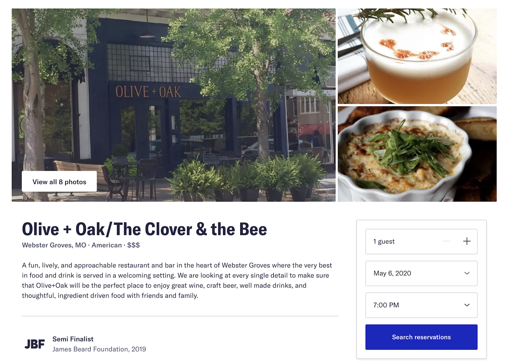
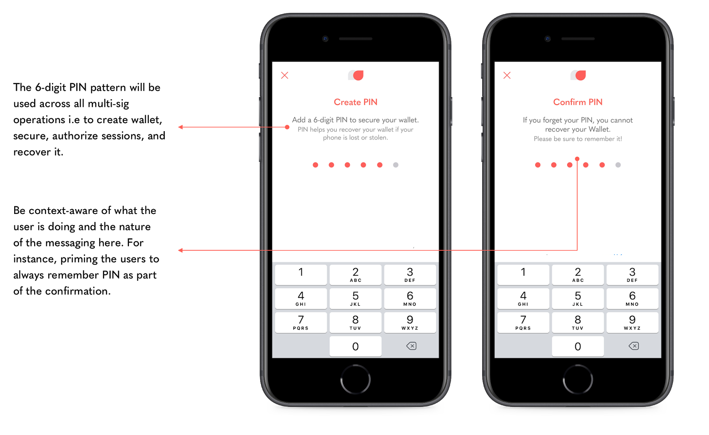
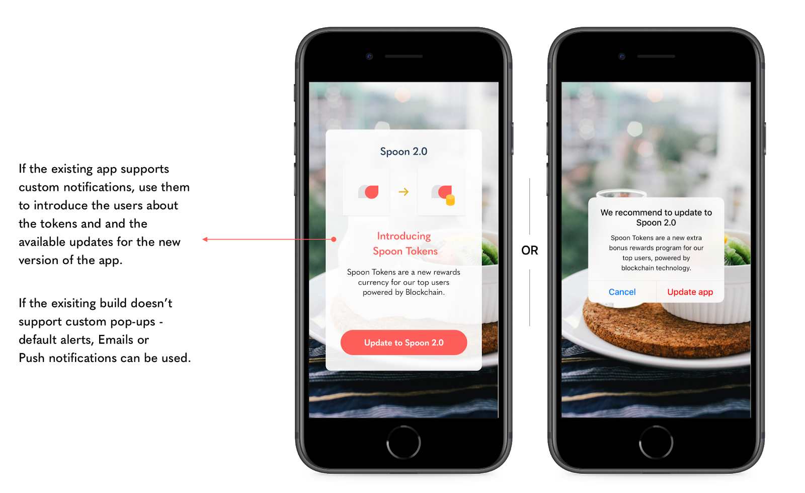
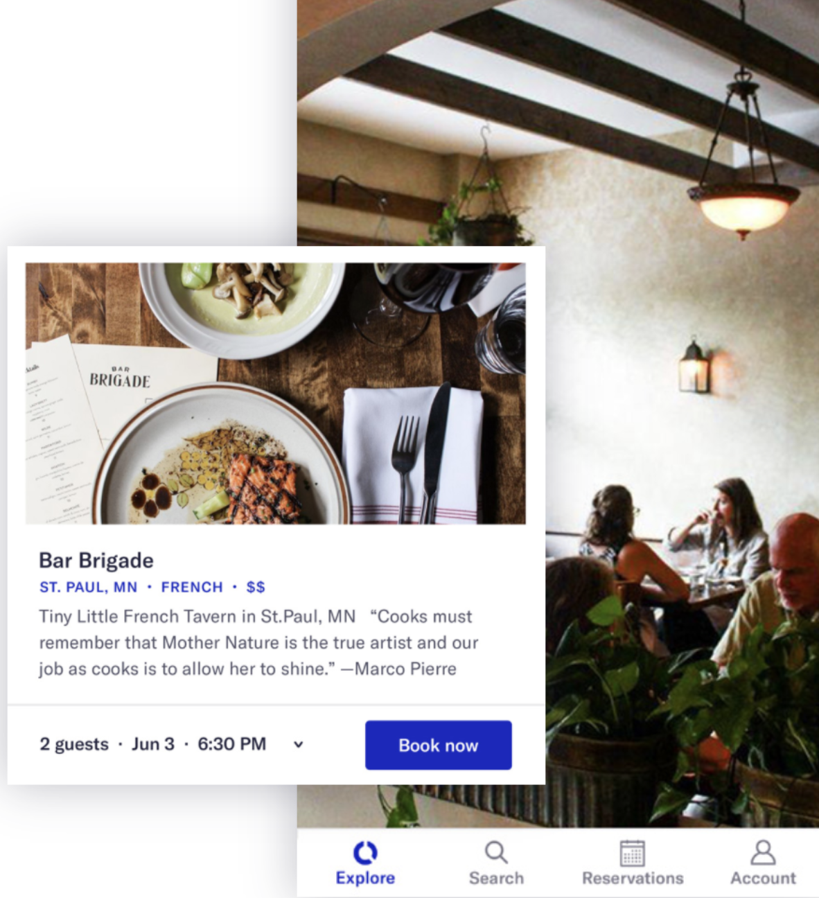
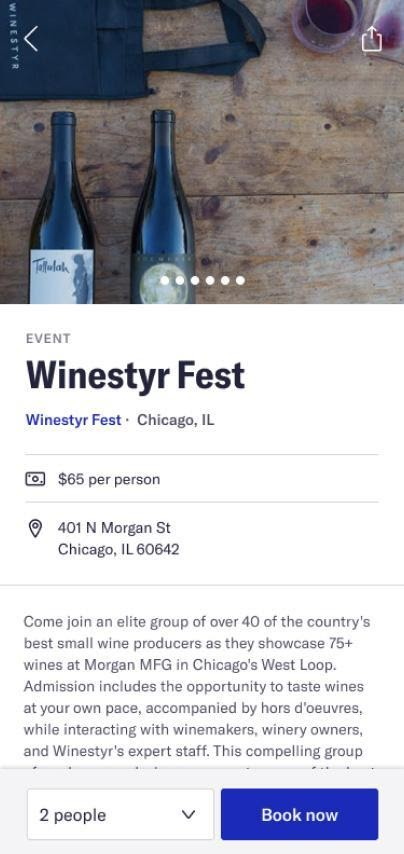
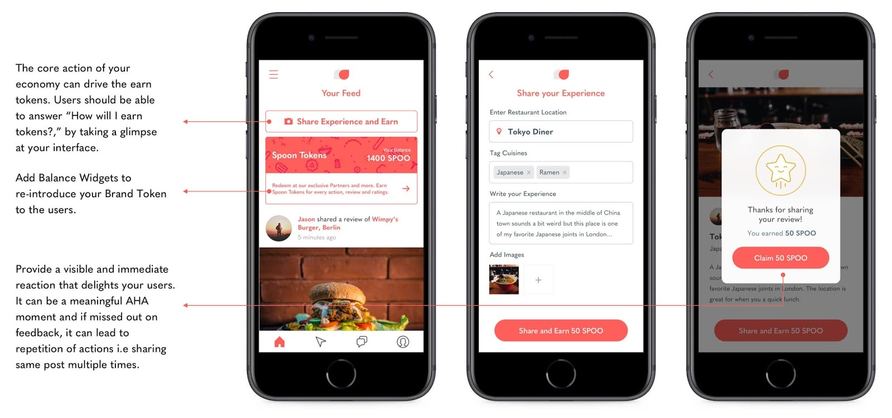
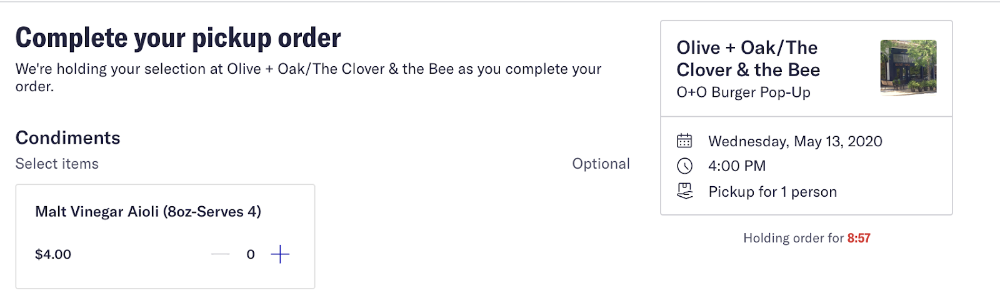
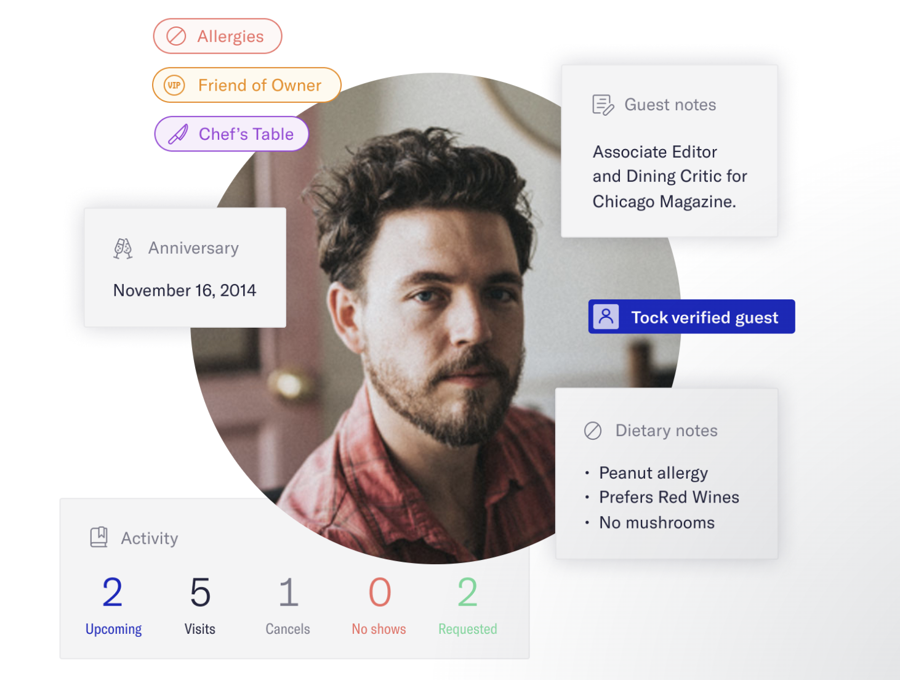
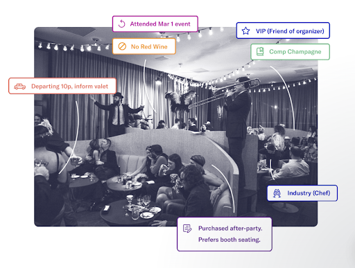

# Sample Use Case
An Example of What's Possible with Intempt Platform
In this guide, we use an example of a fictitious restaurant application, “Raw” to illustrate how a company could use the Intempt SDK to integrate the User Personalization ability into their application. The UX case study aims to serve as a reference for developers and to help create a faster and smoother implementation of the Intempt SDK with the application.
We’ll be using user stories around food experiences to illustrate the key concepts of the Intempt SDK implementation and to present some basic ideas for personalization.
ACQUISITION & CONVERSION WORKFLOW
# 1. Workflow: Website, Initial Impressions and Download App
The goal of the website is to introduce end users to the restaurant. The CTA on this page is for the user to get a feel for the restaurant and search for available reservations - since this website has the Intempt SDK integrated, all behavior on the website is autotracked.

After searching and booking a reservation the user is asked to download the App to complete their reservation since the App is central to their restaurant experience.
# 2. Workflow: Download App and Login
After making a reservation, the User is asked to download the app and login to see what their experience at the restaurant will be like.
USER AUTHENTICATION
This Login Identifier is also used by Intempt to stitch the User profile between the Web and iOS as will be evident later.

CONVERSION & CROSS-SELL WORKFLOW
# 3. Workflow: Explore the App and the Menu
The App introduces the User to the concept of earning tokens (from your loyalty provider), upgrading to the latest version.

Users are encouraged to explore the menu to order while in the restaurant to order and earn tokens in the process.

# 4. Workflow: Finally they review their options and place their order

Once biometrics are implemented, the user can authorize new Sessions with her biometrics and only rely on the PIN as a backup if biometrics are not working.
RETENTION & REFERRAL WORKFLOW
# 5. Drive engagement with social actions
Users that have finished their meal and had a good experience (evidenced by a 5* review in the App) are encouraged to receive a complimentary appetizer on their next visit and encouraged to share their experience with their community.

# 6. Logging into the Web to re-book
The user finally goes back to the website to book another reservation and the process repeats itself.

# 7. Understanding Web and iOS Activity in a Single View
One of the innovations of Intempt is that the Web user and the iOS App user shown above typically are difficult to see as a single continuous User.
Moreover anonymous activity (no login) is difficult to see as a continuous activity with the logged in user - this problem is compounded when you have two different applications, so you end up managing up-to-four (in this case) activity streams that really belong to one User activity stream. At Intempt we have a Customer Data Platform that syncs and merges the User profile across devices and identifiers.

# 8. Segmentation for personalized orchestration across your customers’ experience.
As you can imagine, your Users are in various stages. Some have made a reservation but haven’t ordered yet and some have ordered multiple times but haven’t reviewed or shared their experience (yet). Others have been to many events and are large advocates of your brand.
Finally apart from behavior, some Users have different demographics. We don’t just mean gender and age, we mean they’re a food critic, a chef that knows the Owner or a vegan, for example or one that has a stated preference for privacy and non-smoking.

SEGMENTATION PROCESS
All of this information can be used to segment the user flexibly and deeply. Data from iOS, Web, Servers, Beacons (in restaurant) can be gathered and the Intempt provides a UI/UX to micro-segment your user base.
# 9. Delivering the (VIP) Experience at the Endpoint
Micro Segmentation is critical but isn’t the endgame. The User needs to be messaged at the right time in the context they happen to be in.
VIP EXAMPLE
For example, a VIP customer may be dining and may have triggered a Beacon and qualifying for a Segment where they should be approached with a special offer. This needs to notify the General Manager of the restaurant to approach the table. This needs the CRM application backing the restaurant to call the Intempt SDK to ensure the “VIP Segment” provides a callback to the service application, alerting the General Manager to approach the customer dining at Table 12, for example.